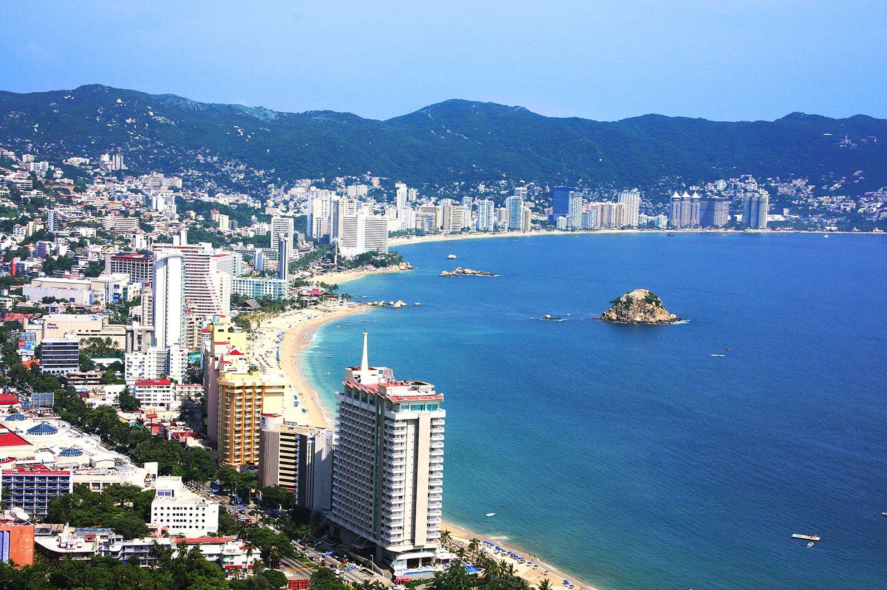
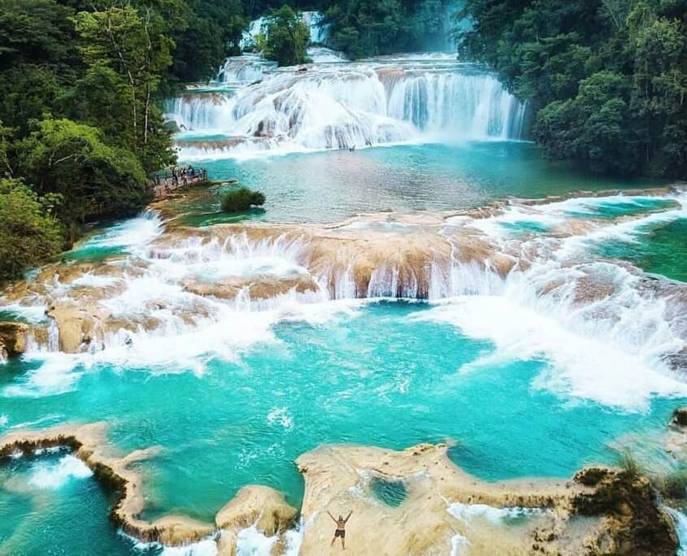
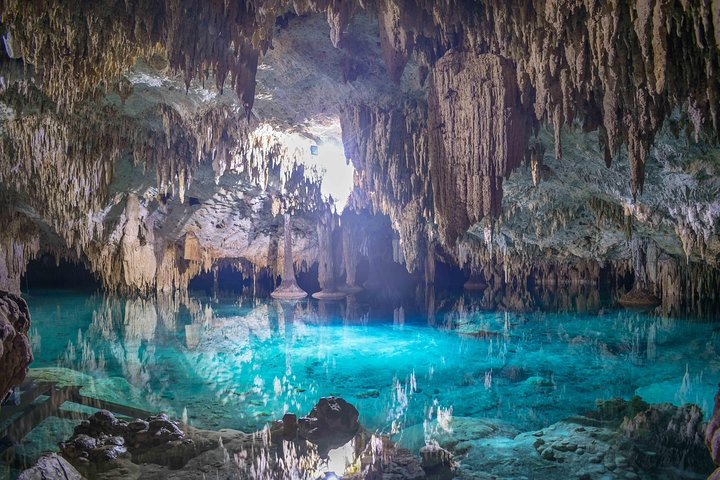
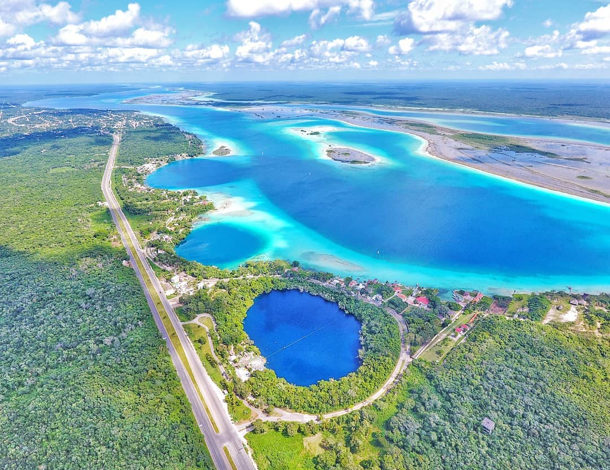
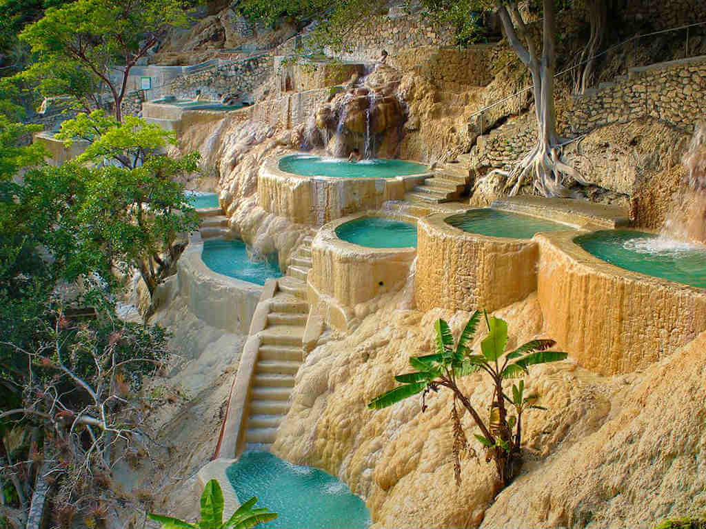

Palenque

La zona arqueológica toma su nombre de la comunidad vecina fundada a finales del siglo XVI: Santo Domingo de Palenque. La última acepción, también de origen español, significa “Estacada” o “Empalizada”, que es una valla de madera que rodea un sitio para protegerlo. Es posible que los indígenas conservaran en la memoria la existencia de obras defensivas en la abandonada ciudad prehispánica.
Acapulco

Acapulco es un ícono del turismo en México, al convertirse en el primer destino de sol y playa que tuvo fama a nivel internacional. En la década de los 50, fue el escondite de vacaciones, fiestas y bodas del jet-set hollywodense y la realeza británica, que dejaban los escenarios o sus palacios para disfrutar de la belleza exuberante de sus aguas y acantilados que, hasta hoy, protegen la bahía ubicada en el estado de Guerrero
Agua Azul Chiapas

El azul añil del agua, el verde de la vegetación, la brisa constante y el sonido acuático inagotable contribuyen a hacer de este lugar, situado a 133 km de San Cristóbal de las Casas, uno de los más espectaculares e inolvidables de México.
El río Agua Azul desciende su lecho calizo en escalones formando una serie de impresionantes cascadas que crean albercas naturales contenidas por diques calcáreos, los llamados “gours” en la terminología geológica. La carretera conduce al sitio donde se ubican los modestos servicios con que cuenta.
Sac Actun

La cueva sumergida más larga del planeta Tierra se encuentra bajo el municipio de Tulum en Quintana Roo, México. Se extiende por más 368 km a una profundidad media de 21 metros y una máxima de 120 m en las profundidades de “El Pit”. El Sistema Sac Aktun (cueva blanca) descarga agua dulce hacia el Mar Caribe a través de ojos de agua y en caletas como Xel Ha.
La exploración sistemática de las cuevas subacuáticas de Quintana Roo comenzó en Tulum a mediados de los años ochenta. Diferentes equipos de buzos comenzaron a explorar, registrar y cartografiar los numerosos cenotes de la región y encontraron extensos pasajes asociados entre ellos.
Bacalar

Bacalar es un hermoso Pueblo Mágico que destaca por la belleza de sus atractivos naturales, es el lugar perfecto para los amantes de la naturaleza y la tranquilidad además de estar lleno de historia, aventura y cultura.
Ubicado a tan solo 35 kilómetros del Aeropuerto Internacional de Chetumal encontrarás este pequeño paraíso, en donde podrás relajarte dejándote consentir por la hospitalidad de su gente además de disfrutar de increíbles experiencias que se volverán parte de tu historia.
Grutas De Tolantongo

Tolantongo o las grutas de Tolantongo, son un conjunto de cuevas que se ubican en el municipio del Cardonal, estado de Hidalgo.
Desde la gruta principal fluyen aguas termales hasta formar un río, en cuyas riberas los visitantes colocan tiendas de campaña , además el lugar cuenta con varias albercas, restaurantes, hoteles, tiendas de abarrotes y la tirolesa más grande de Hidalgo de cerca de dos kilómetros de distancia. Los primeros paseos al lugar datan de hace 40 años e inicialmente se realizaban en burro o a caballo.